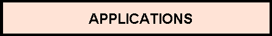

The User Datagram Protocol (udp) Group (1.3.6.1.2.1.7)
The
udp
subtree is composed of some individual statistics variables and a table
that records UDP services that are actively listening for clients.
UDP Traffic Statistics
As UDP is a quite simple protocol, its statistics variables in this
MIB
shows
that fact. There are counts of incoming and outgoing UDP
datagrams
. The number
of received UDP datagrams for which there was no application at the destination
port is also counted.
The figure below is a
Case diagram
that shows the flow of UDP
datagrams entering and leaving a system.


Case diagram showing UDP datagram flows
The UDP Listener Table
This table records UDP listener information that are the
IP
Addresses and UDP
port numbers in use by local applications that are waiting for UDP datagrams.
These applications are called listeners.